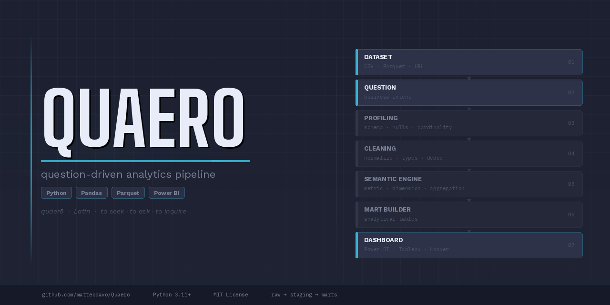
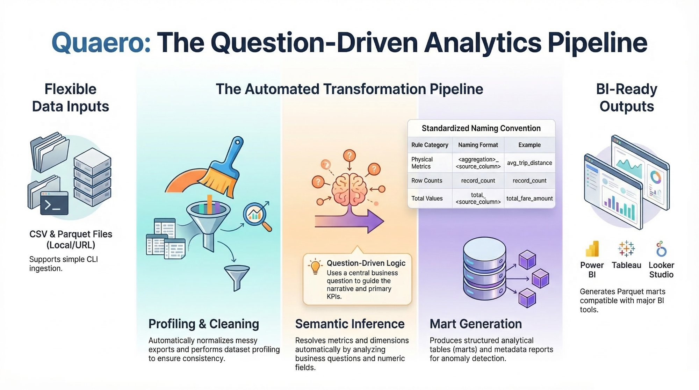

Quaero
quaerō · Latin · to seek · to ask · to inquire
A question-driven analytics framework that transforms raw datasets into analytical marts, semantic metrics, and BI-ready outputs — not a BI tool, but the layer that makes your data ready for one.


The Problem
Data analysts spend most of their time preparing data. Not analyzing it.
Messy exports, inconsistent schemas, missing documentation, manual cleaning — the same deterministic steps repeated across every project. By the time actual analysis begins, half the working session is already gone.
Quaero automates the deterministic part. The creative part — metric selection, business framing, interpretation — stays human.
What Quaero Does
From raw data to analysis-ready outputs in one command.
You provide a raw dataset and a business question in plain language. Quaero uses that question to guide every downstream decision — which fields become metrics, which become dimensions, how marts are structured, what the metadata says.
The output is not a dashboard. It's the clean, structured, documented data layer that makes building a dashboard fast and reliable — in Power BI, Tableau, Looker Studio, or any other BI tool.
How It Works
An automated refinery in 8 steps
Architecture
A layered data architecture, built automatically.
Every project follows the same structure, making outputs predictable and portable.
What's New in v0.2.0
Local UI, Python wrapper, and smarter inference.
run_pipeline().global_economic_indicators — a ready-to-run example dataset.Public Demo Project
global_economic_indicators
Semantic Engine
Deterministic inference — no configuration needed.
The engine parses the business question and maps it to three components. Example: "What is the average trip distance by location?"
| Component | How it's inferred | Example |
|---|---|---|
| Aggregation Intent | Keywords: average, total, highest, count… | average |
| Metric Column | Deterministically from numeric fields | trip_distance |
| Dimension Column | From categorical / ID fields | location |
Works ~80% of the time without configuration. For the remaining 20%, manual overrides --metric-column and --dimension-column are available. In v0.2.0, an optional LLM fallback handles ambiguous cases automatically.
Execution Modes
Three ways to run Quaero.
- Command-line flags
- Single datasets
- Quick, one-off inference
- Rapid prototyping
- Local web interface
- Visual pipeline control
- No terminal needed
- Live output preview
project_config.jsonrun_pipeline()wrapper- Multi-dataset projects
- Production-grade pipelines
Getting Started
Install and run in minutes.